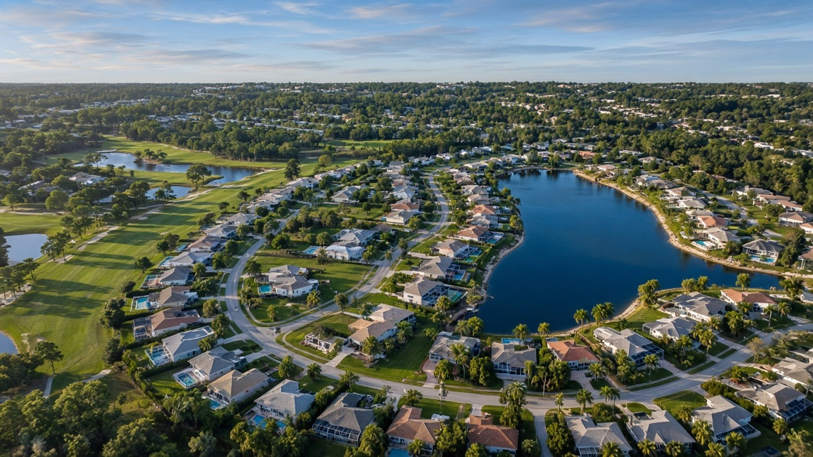

What to Know Before Buying in Rotonda West

Rotonda West & Charlotte County, FL
Quick Answer
Rotonda West is a golf and lake community run by a mandatory association.
Rotonda West is a planned community with a circular core, several golf courses, and thousands of platted lots in Charlotte County. Before you shop homes for sale, learn what the association assessment covers, how many nearby lots are still vacant, and how much of the community is seasonal.
If you are searching for homes for sale in Rotonda West, start with the lot, the association, and the kind of water you are buying beside.
What Rotonda West actually is
Rotonda West sits on the Cape Haze peninsula in Charlotte County, near the Sarasota County line. The land was a cattle ranch owned by the Vanderbilt brothers, who bought about 36,000 acres in 1952. In 1969 the remaining land was sold to a Miami developer that became Cavanagh Communities Corporation, and the company launched Rotonda West. According to the Rotonda West Association's own history pages, the layout is circular at its core, draining outward toward the Rotonda River.
The association's history describes the developer's business as land sales, and many lots are still vacant. That is why you will find finished streets next to blocks of empty lots, and why the association has its own approach to mowing and upkeep. Read our Rotonda West area page for the neighborhood overview, and our Punta Gorda real estate guide for how it compares with the harbor side of the county.
A few facts to put Rotonda in context
These figures describe the Rotonda census place or the wider county. They are not a substitute for recent comparable sales on a specific house.
| Rotonda West: Context Figures | ||
|---|---|---|
| Topic | Figure | How to read it |
| Population | 10,352 | U.S. Census Bureau, American Community Survey (ACS) 5-year estimates for 2020-2024, Rotonda CDP. |
| Median age | 68.2 | ACS 2020-2024. Charlotte County overall is 59.9. Residents age 65 and over are 62.5 percent of the population. |
| Median owner-reported home value | $389,400 | ACS 2020-2024 median value of owner-occupied homes, with a margin of error of about $24,500. This is what owners estimated their homes were worth, not a median sale price. Charlotte County is $328,900. |
| Owner-occupied homes | 86.2 percent | ACS 2020-2024 share of occupied housing units that are owner-occupied. |
| Seasonal housing units | 27.2 percent | Share of all housing units held for seasonal, recreational, or occasional use, ACS 2020-2024. Charlotte County overall is 15.7 percent. |
| Median year built | 1998 | ACS 2020-2024. The county median is 1991, so Rotonda is newer than the county median. |
| Housing mix | 69.2 percent detached | Share of housing units that are detached single-family homes, ACS 2020-2024. About 21.6 percent of units are in buildings with five or more units, which includes condominiums and villas. |
| Association assessment | $190 per lot | The Rotonda West Association's published mandatory yearly assessment for 2024, due February 15. Confirm the current amount before you buy. |
| Vacant lots | About 2,400 | The association's FAQ, written around 2021, estimated about 2,400 vacant lots and about 80 new builds a year. Treat it as a dated community estimate, not a current count. |
Sources: U.S. Census Bureau ACS 2020-2024; Rotonda West Association FAQ and history pages. Association figures are the association's own and may be out of date.
Key Takeaways
- Rotonda West began as a ranch bought by the Vanderbilt brothers in 1952. It was sold in 1969 to a developer that launched the community with a circular core layout.
- The ACS 2020-2024 median owner-reported value for the Rotonda census place is $389,400, with a margin of error of about $24,500. It is a survey figure, not a sale price.
- The community has a median age of 68.2, and 27.2 percent of housing units are used seasonally, compared with 15.7 percent for the county.
- The Rotonda West Association's mandatory assessment was $190 per lot for 2024. Ask for the current number and what it covers.
- The association mows vacant lots on a cycle and estimated about 2,400 vacant lots around 2021. Check what is next door before you buy.
- Five Rotonda Golf & Country Club courses are listed by the Englewood Chamber: Hills, Links, Long Marsh, Palms, and Pinemoor.
The association, the assessment, and the deed restrictions
Rotonda West Association, Inc. is the community's property-owner association, and its yearly assessment is mandatory for lot owners. For 2024 the association published $190 per lot, with statements going out by December 31 and payment due by February 15, and a $25 late fee after that date. The association's office is at 646 Rotonda Circle. Because amounts change, ask for the current figure and a copy of the budget.
One feature surprises buyers: the association mows vacant lots. Its FAQ says the board decided long ago that leaving upkeep to vacant-lot owners was not working, so it mows roughly 1,600 to 2,000 of them on a cycle of about six times a year. The association says mowing is about one-eighth of its yearly budget. That is a tradeoff you should know about. It keeps vacant lots tidy, and every owner pays for it. If you buy a house, ask whether the lots beside you are vacant, owned by the neighbor as a buffer, or likely to be built on.
The deed restrictions also address things like invasive plants. The association says the Brazilian pepper tree is a Class I prohibited plant under Florida Department of Environmental Protection rules, and that it has been clearing it from the community's 168-acre Broadmoor Park in phases since 2015. Request the full deed restrictions before you make an offer and read them like a contract, because they are one.
Golf, lakes, and the kind of water you are buying beside
Rotonda West is better known for golf than for Gulf-access boating. The Englewood Chamber lists five Rotonda Golf & Country Club courses: Hills, Links, Long Marsh, Palms, and Pinemoor. Many homes sit on fairways, lakes, or ponds, and a view of water is not the same as access to it. When a listing says waterfront, ask what kind: a golf-course lake, a canal, or tidal water, and whether a boat can reach the Gulf from it. If you want true Gulf access, compare it with a locked-canal community such as South Gulf Cove or the harbor-side canals in Punta Gorda Isles.
A golf-front lot also changes the questions. Ask about golf-course ownership, any membership requirements, and whether club dues are optional. Those terms live in the contract and the club documents, not in the listing remarks.
Seasonality, age, and who lives here
The numbers say Rotonda is a place where a large share of homes are used part of the year. In ACS 2020-2024 data, 27.2 percent of housing units are held for seasonal, recreational, or occasional use, compared with 15.7 percent for the county. That matters for resale timing, for how quiet the streets are in summer, and for insurance and hurricane preparation on a house you will not occupy year-round. Age data point the same direction, with a median age of 68.2. Match the community's amenities to your own plans, not to a stereotype.
Newer construction is part of the mix, with a median year built of 1998, but there is a lot of variety. Ask for roof age, HVAC age, and permits on any home, and treat a younger median as an average, not a promise.
Buying in Rotonda West: a few local realities
Insurance and flood zones belong in the first conversation. Hurricane Ian made a second landfall near Punta Gorda on September 28, 2022, according to the National Hurricane Center's final report, and Charley came ashore in the same area in 2004. Neither fact prices a policy. Get a quote early, check the FEMA flood zone for the exact address, and ask for wind-mitigation documentation.
Homestead. If the home will be your primary residence, ask the Charlotte County Property Appraiser about Florida's homestead exemption. The state exemption is up to $50,000 of assessed value, with the first $25,000 applying to all property taxes, and Save Our Homes limits annual increases to the lesser of 3 percent or the change in the Consumer Price Index, which is 2.7 percent for 2026. You must own and live in the home as your permanent residence on January 1 and apply by March 1.
Price context. The FHFA house-price index for the Punta Gorda metro area, which covers Charlotte County, was 391.34 in the second quarter of 2026, down 0.2 percent from a year earlier and 7.7 percent below the second quarter of 2024. It is a repeat-transaction index for the whole metro area, not a Rotonda West sale price. Charlotte County had 2,856 active residential listings on a typical day in October 2026, per Florida Gulf Coast University, which is county inventory and not a Rotonda count.
Ask for recent comparable sales with the same lot type, view, and year built. When you are ready to search, the buyers page outlines how the team works, and you can use the mortgage calculator to frame a budget.
Frequently asked questions
Is Rotonda West in Charlotte County or Sarasota County?
Rotonda West is in Charlotte County, on the Cape Haze peninsula, near the Sarasota County line. Check the property appraiser and the county permitting office for the specific parcel, because services and rules differ by county.
What is the Rotonda West Association assessment?
The association published a mandatory yearly assessment of $190 per lot for 2024, due by February 15. Ask for the current amount, the budget, and the reserve information before you buy.
Does Rotonda West have Gulf access?
Rotonda West is known more for golf courses, lakes, and ponds than for Gulf-access boating. Some water views are golf-course lakes, so ask exactly what kind of water a home fronts and whether a boat can reach the Gulf from it.
How many golf courses are in Rotonda West?
The Englewood Chamber lists five Rotonda Golf & Country Club courses: Hills, Links, Long Marsh, Palms, and Pinemoor. Ask about membership terms before you rely on any of them.
Are there vacant lots in Rotonda West?
Yes. The association's FAQ, written around 2021, estimated about 2,400 vacant lots and mows many of them. Confirm what is next door to any house you are considering, because vacant lots can be built on.
What is the median home value in Rotonda?
The Census Bureau's ACS 2020-2024 estimate for the median owner-reported value in the Rotonda census place is $389,400, with a margin of error of about $24,500. It is a survey of what owners estimated their homes were worth, not a sold-price median.
Is Rotonda West mostly seasonal?
Not mostly, but a large share. ACS 2020-2024 data show 27.2 percent of housing units held for seasonal, recreational, or occasional use, compared with 15.7 percent for Charlotte County.
Talk with The Helgemo Team
If you are comparing Rotonda West with other Charlotte County communities, talk with a team that works this market in person. Call or text The Helgemo Team at (941) 770-2275, or visit the contact page. The office is at 320 Cross Street, Punta Gorda, Florida 33950. You can also meet Brian Helgemo or read more about the team.
Related Reading
- Rotonda West area page
- South Gulf Cove: a local living guide
- Is Punta Gorda a good place to live?
- How The Helgemo Team works with buyers
- A Local Guide to Punta Gorda Real Estate
Thinking About Buying or Selling?
If you are buying, selling, or just trying to understand a community, talk with a team that works this market in person. Call or text The Helgemo Team at (941) 770-2275.
Sources: U.S. Census Bureau, American Community Survey 2020-2024 estimates for Rotonda CDP, via Census Reporter; U.S. Census Bureau, American Community Survey 2020-2024 estimates for Charlotte County, via Census Reporter; Rotonda West Association, Early Facts About Rotonda West; Rotonda West Association, Frequently Asked Questions; Englewood Area Chamber of Commerce, Golf Courses; National Hurricane Center, Tropical Cyclone Report: Hurricane Ian; National Hurricane Center, Tropical Cyclone Report: Hurricane Charley; Florida Department of Revenue, Property Tax Information for Homestead Exemption; Florida Department of Revenue, Save Our Homes; Federal Housing Finance Agency all-transactions House Price Index, Punta Gorda, FL metropolitan area, Q2 2026; Florida Gulf Coast University Regional Economic Research Institute, Charlotte County active residential listings, October 2026. Association figures are the association's own and may be out of date. Census place, metro, and county figures are context only, not a substitute for recent comparable sales on a specific house. Data and sources reviewed November 10, 2026.